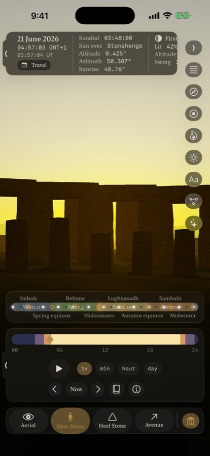
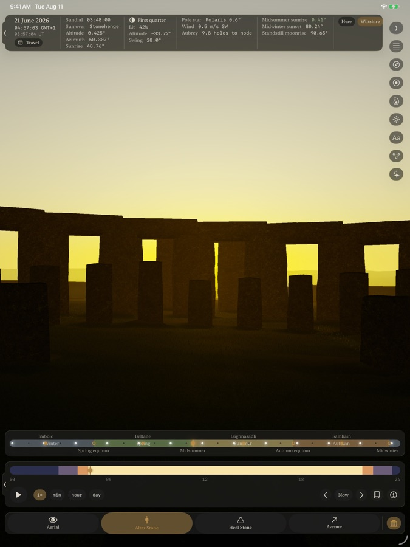
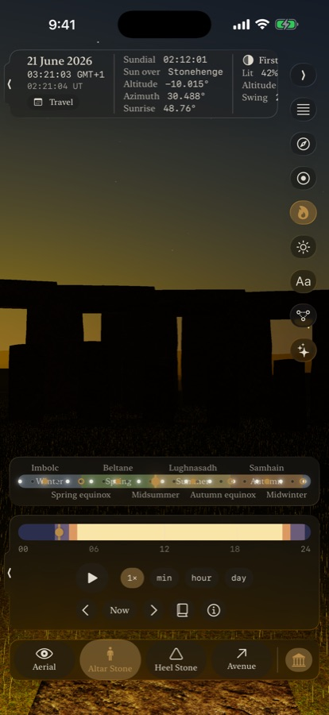

Henge
A photoreal Stonehenge that keeps real time.
The sun in Henge is not an animation. It is computed — the same ephemeris astronomers use, accurate across five thousand years — and the stones cast exactly the shadows that sun demands. Stand at the Altar Stone on midsummer morning and watch the sunrise arrive over the Heel Stone, within a solar diameter of where the builders aligned it forty-five centuries ago.
The Instrument



The whole circle raised — thirty sarsens and their lintel ring, the five great trilithons, the bluestones, the Altar, Slaughter and Heel Stones, the Station Stone rectangle, the fifty-six Aubrey holes — every stone carrying its Petrie number, standing on Salisbury Plain's own surveyed ground.
The Wheel of the Year lands each festival on the instant the sun actually arrives, not a calendar date. Moon phases, eclipse seasons, the 18.6-year standstill — and a time machine from 3000 BC to AD 3000, where Thuban holds the pole and Polaris stands aside.
Every claim carries its tier — Established, Debated, or Modern tradition — with the sources one tap away. The solstice axis is established. The equinoxes at Stonehenge are modern tradition, and the app says so.
No account, no network, no analytics, no data collected. The almanac works in a field with no signal. One optional purchase lifts the free tier's session clock for good — no subscription. The privacy policy is short because the data flows are short.
Support
Questions, bugs, archaeology quarrels: jeff@river.io — a person reads this, and citations are welcome ammunition.
Mac install: open the image and drag Henge into Applications. This early build is not yet notarized, so on first launch right-click the app, choose Open, and confirm once — after that it opens normally.
No account to recover, no password to reset: there is nothing to sign into. Purchases restore through the App Store on any of your devices with the same Apple account.
The astronomy, the archaeology and the accuracy figures live on the research site.